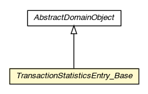

pt.ist.fenixframework.backend.jvstm.pstm
Class TransactionStatisticsEntry_Base

java.lang.Object
 pt.ist.fenixframework.core.AbstractDomainObject
pt.ist.fenixframework.backend.jvstm.pstm.TransactionStatisticsEntry_Base
pt.ist.fenixframework.core.AbstractDomainObject
pt.ist.fenixframework.backend.jvstm.pstm.TransactionStatisticsEntry_Base
- All Implemented Interfaces:
- Serializable, DomainObject
public abstract class TransactionStatisticsEntry_Base
- extends AbstractDomainObject
- See Also:
- Serialized Form
TransactionStatisticsEntry_Base
protected TransactionStatisticsEntry_Base()
getServer
public String getServer()
setServer
public void setServer(String server)
getNumReport
public int getNumReport()
setNumReport
public void setNumReport(int numReport)
getNumReads
public long getNumReads()
setNumReads
public void setNumReads(long numReads)
getNumWrites
public long getNumWrites()
setNumWrites
public void setNumWrites(long numWrites)
getNumAborts
public long getNumAborts()
setNumAborts
public void setNumAborts(long numAborts)
getNumConflicts
public long getNumConflicts()
setNumConflicts
public void setNumConflicts(long numConflicts)
getSecondsBetweenReports
public long getSecondsBetweenReports()
setSecondsBetweenReports
public void setSecondsBetweenReports(long secondsBetweenReports)
getWhen
public org.joda.time.DateTime getWhen()
setWhen
public void setWhen(org.joda.time.DateTime when)
getReadOnlyReads
public pt.ist.fenixframework.backend.jvstm.pstm.TransactionStatistics.CounterStats getReadOnlyReads()
setReadOnlyReads
public void setReadOnlyReads(pt.ist.fenixframework.backend.jvstm.pstm.TransactionStatistics.CounterStats readOnlyReads)
getReadWriteReads
public pt.ist.fenixframework.backend.jvstm.pstm.TransactionStatistics.CounterStats getReadWriteReads()
setReadWriteReads
public void setReadWriteReads(pt.ist.fenixframework.backend.jvstm.pstm.TransactionStatistics.CounterStats readWriteReads)
getReadWriteWrites
public pt.ist.fenixframework.backend.jvstm.pstm.TransactionStatistics.CounterStats getReadWriteWrites()
setReadWriteWrites
public void setReadWriteWrites(pt.ist.fenixframework.backend.jvstm.pstm.TransactionStatistics.CounterStats readWriteWrites)
Copyright © 2013. All Rights Reserved.